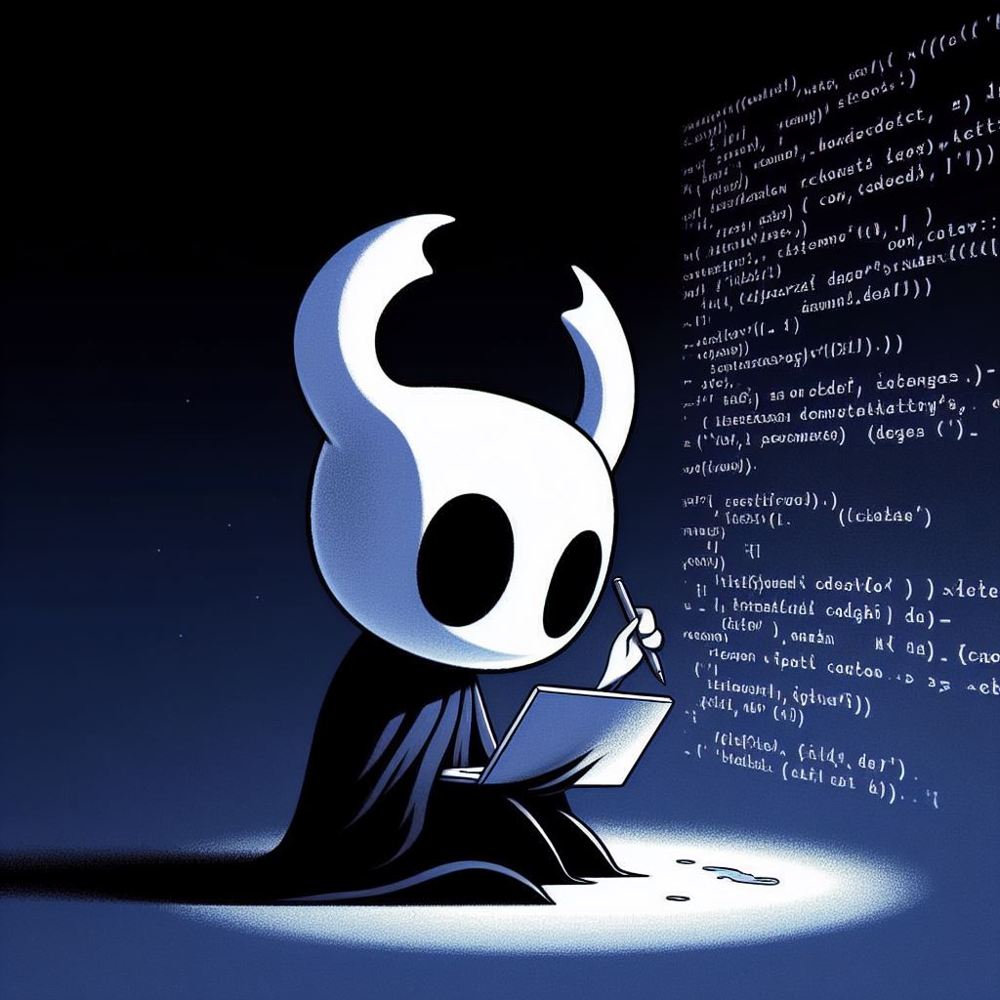

Hello, I'm Mark Nevison
Full Stack Developer
With two years of professional experience, specializing in web development, project management, Agile methodology, and quality assurance testing. Adept at coordinating effectively with development teams, clients, and non-technical stakeholders to execute complex web development projects.
Tech Stack
